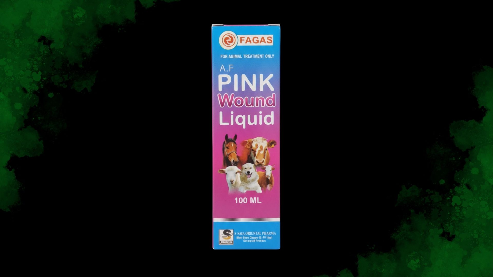

Instant
Maggot Kill
Rapid
Healing
Anti
Septic
External Care Solution
Pink Wound Liquid
Product Overview
A specialized topical veterinary liquid developed for rapid wound healing and instant maggot elimination. It provides a long-lasting antiseptic barrier to prevent secondary infections and fly-strike.
Target Species
Cattle, Buffalo, Sheep, Goats, Horses, and Camels.
Available Packing
120 ml Bottle
Key Benefits
- Kills maggots instantly upon application
- Promotes rapid skin and tissue regeneration
- Deep-cleansing antiseptic action
- Effectively prevents fly-strike re-infestation
Indications
- • Maggot-infested wounds (Myiasis)
- • Open accidental cuts and lacerations
- • Surgical wound care and post-castration
- • Foot rot and inflammatory hoof lesions
Administration & Use
Application Frequency
Apply 1–2 times daily
Clean the wound with saline or distilled water first. Spray or apply liquid directly to cover the entire wound surface.
Storage & Safety
- • Store in a cool, dry place below 30°C
- • Close bottle cap tightly to prevent evaporation
- • For external veterinary use only